🖱 Rueda para zoom · Arrastra para mover · Doble clic para resetear
Bases de Datos — PL/pgSQL
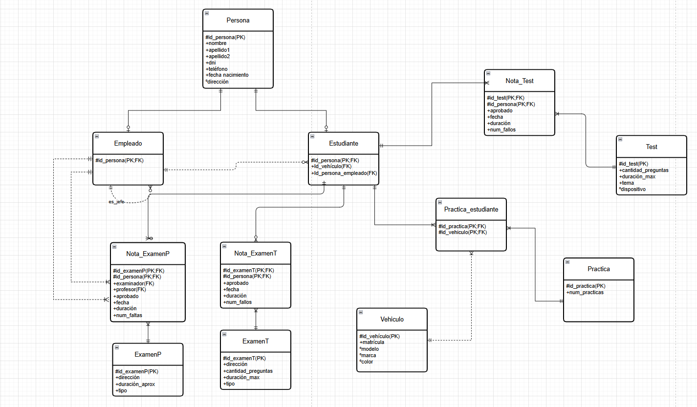
Recibe el ID de un estudiante y devuelve cuántos minutos de prácticas tiene acumulados en total.
Los profesores pueden comprobar de un vistazo si un alumno tiene suficientes horas de conducción antes de presentarse al examen práctico, sin tener que hacer cuentas a mano.
Parámetro: p_idestudiante · Variables: v_nombre, v_total
SELECT INTO STRICT (NO_DATA_FOUND si no existe) · IF / ELSIF / ELSE según los minutos acumulados · gestión de OTHERS.
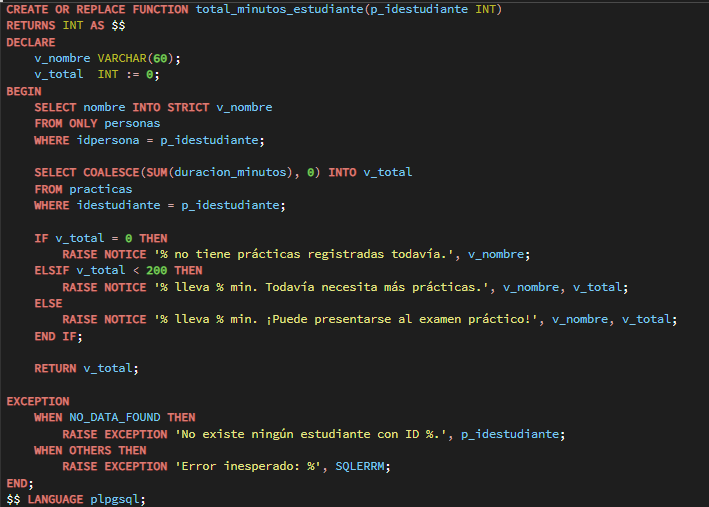
Ejemplos de llamada
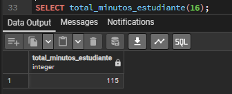
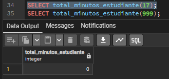
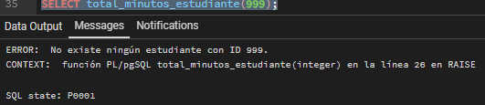
Devuelve una tabla con el listado de prácticas que ha impartido un instructor: el nombre del estudiante, la fecha, la duración y la matrícula del vehículo.
Permite ver el historial de clases de cada profesor de forma clara, sin tener que escribir JOINs manualmente cada vez que se necesite esta información.
Cursor explícito con JOIN a personas y LEFT JOIN a vehiculos · Bucle LOOP / EXIT WHEN NOT FOUND · RETURN NEXT fila a fila · excepciones NO_DATA_FOUND y OTHERS.
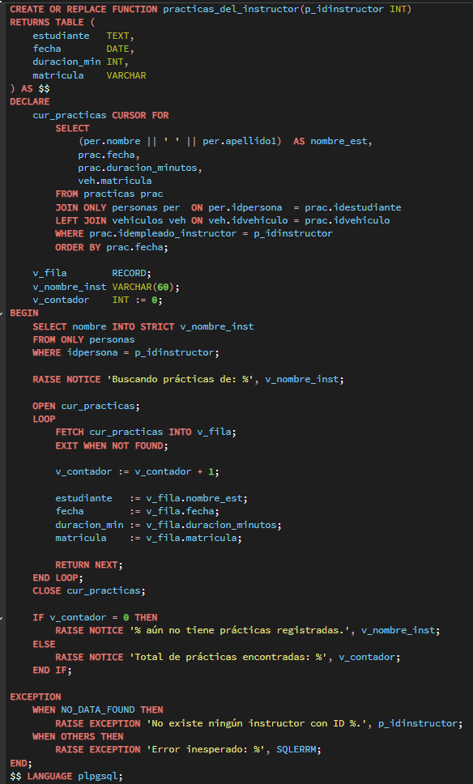
Ejemplos de llamada
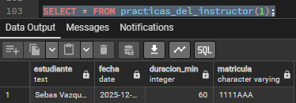
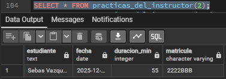
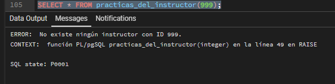
Inserta una nueva práctica en la base de datos. El usuario pasa el DNI del estudiante y la matrícula del vehículo, y el procedimiento busca automáticamente sus IDs internos.
Facilita el registro de prácticas sin necesidad de conocer los IDs de la base de datos. Además, valida que el estudiante y el vehículo existan antes de insertar, evitando errores manuales.
DML INSERT · SELECT INTO STRICT para buscar por DNI y matrícula · condicional IF para validar duración · excepciones NO_DATA_FOUND, TOO_MANY_ROWS y OTHERS.
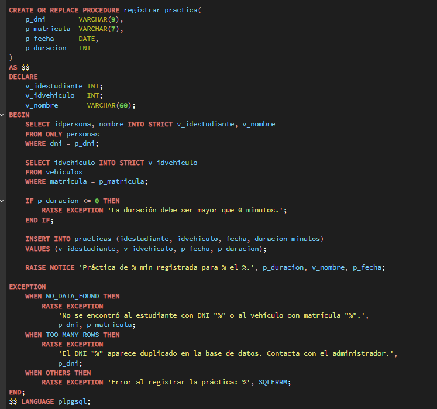
Ejemplos de llamada
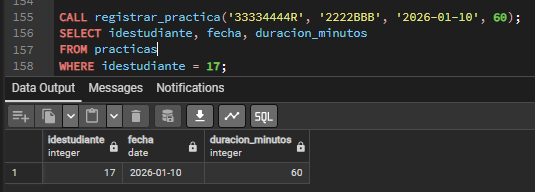
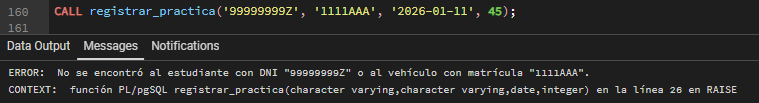
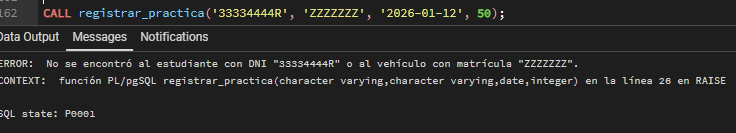
Se activa antes de cada INSERT en la tabla practicas, una fila a la vez (FOR EACH ROW).
Comprueba que, si se indica un instructor (idempleado_instructor IS NOT NULL), ese ID pertenezca a alguien de la tabla empleados. Si no es así, cancela la inserción lanzando una excepción.
La clave foránea de practicas solo verifica que el ID exista en personas, no que sea empleado. Este trigger añade esa validación extra, evitando registrar como instructor a un estudiante o a alguien externo.
BEFORE · FOR EACH ROW · NEW para leer el valor insertado · RETURN NEW (permite) o RAISE EXCEPTION (cancela).
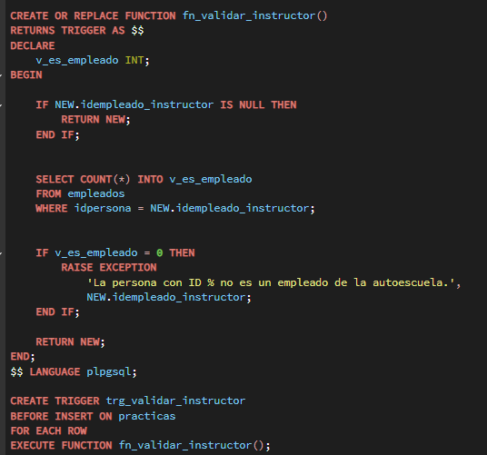
Ejemplos de lanzamiento
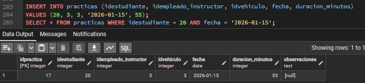
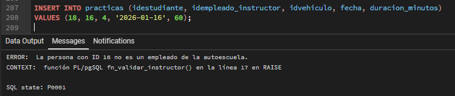
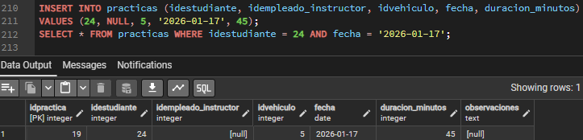
Antes de crear el trigger, necesitamos una tabla donde guardar el historial de cambios. Cada vez que se inserte o modifique una práctica, el trigger escribirá un registro aquí.
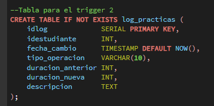
La tabla log_practicas almacena: quién cambió (idestudiante),
cuándo (fecha_cambio), qué operación (tipo_operacion),
y los valores antes y después (duracion_anterior / duracion_nueva).
Se activa después de cada INSERT o UPDATE en la tabla practicas, fila a fila (FOR EACH ROW).
• INSERT: guarda en log_practicas que se añadió una nueva práctica y cuántos minutos tiene.
• UPDATE: solo escribe un registro si la duración cambió, comparando OLD.duracion_minutos con NEW.duracion_minutos. Si solo cambian las observaciones, no hace nada.
Mantiene un historial de cambios. Así se puede saber en cualquier momento cuándo se añadió una clase o cuándo alguien modificó su duración.
AFTER · FOR EACH ROW · NEW y OLD · TG_OP para distinguir INSERT de UPDATE · RETURN NULL (en AFTER el valor se ignora).
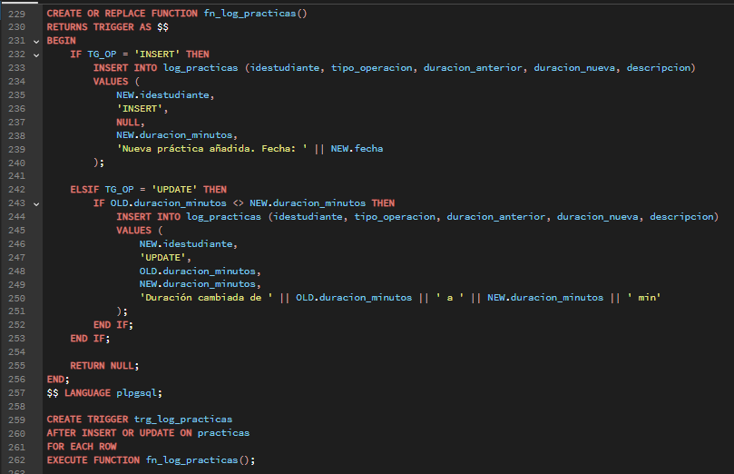
Ejemplos de lanzamiento
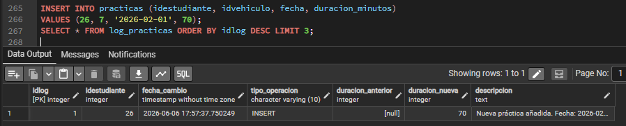
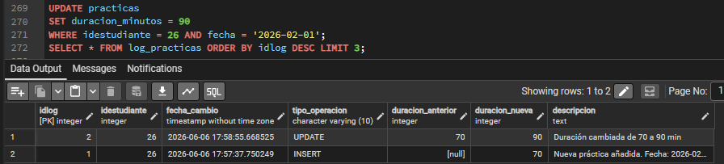
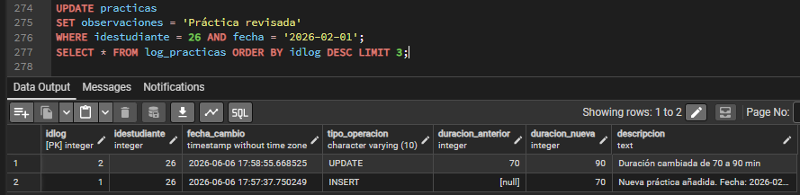
Comando para generar el backup
Define el host y el superusuario para asegurar permisos sobre funciones y triggers.
Formato plain text (.sql). Ideal para ver el SQL de procedimientos y triggers directamente en el fichero.
Modo verbose: muestra el progreso de la exportación tabla a tabla.
Puerto de PostgreSQL (5432 por defecto).
Nombre del archivo de salida donde se guardará todo el volcado SQL.
Nombre de la base de datos en pgAdmin que se va a exportar.